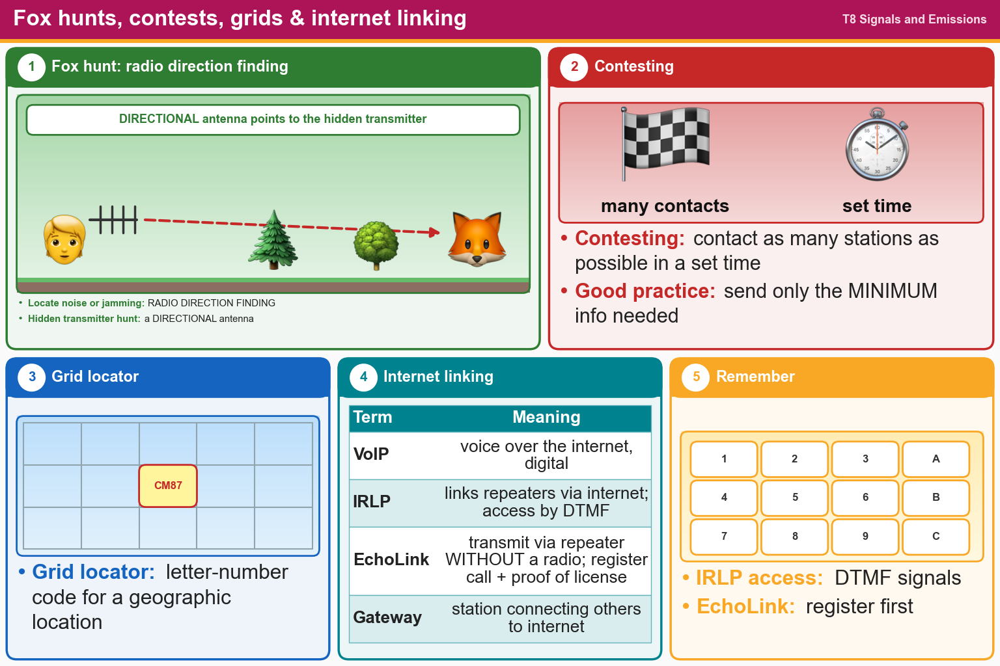

💡 Directional antenna for fox hunts. IRLP uses DTMF. EchoLink needs registration.
📚 Key words
- Direction finding
- Finding where a signal comes from (to locate jammers or noise).
- Fox hunt
- A game to find a hidden transmitter. A directional antenna helps.
- Contesting
- Contacting as many stations as possible in a set time. Keep it short: just IDs and the exchange.
- Grid locator
- A letter-number code for your location, like FN31.
- VoIP
- Voice Over Internet Protocol: sending voice over the internet digitally.
- IRLP
- Internet Radio Linking Project, links repeaters over the internet. You access it with DTMF tones.
- EchoLink
- Lets you use repeaters from a computer or phone. Register and prove your license first.
- Gateway
- A ham station that connects other ham stations to the internet.
Press Check on any question to see if you're right (it won't show the answer), or Grade at the bottom to grade the whole page.
T8C01
Which of the following methods is used to locate sources of noise interference or jamming?
✘A.Echolocation
✘B.Doppler radar
✔C.Radio direction finding
✘D.Phase locking
T8C02
Which of these items would be useful for a hidden transmitter hunt?
✘A.A directional wattmeter
✔B.A directional antenna
✘C.Calibrated SWR meter
✘D.All these choices are correct
T8C03
What operating activity involves contacting as many stations as possible during a specified period?
✔A.Contesting
✘B.Net operations
✘C.Hidden transmitter hunts
✘D.Simulated emergency exercises
T8C04
Which of the following is good practice when contacting another station in a contest?
✘A.Contacting the station twice to be sure that you are in his log
✘B.Adding “Please copy” before your exchange
✔C.Sending only the minimum information needed for proper identification and the contest exchange
✘D.Signing only the last two letters of your call if there are many other stations calling
T8C05
What is a grid locator?
✘A.A letter-number designator assigned to an azimuth and elevation
✘B.An instrument for locating faults in power amplifiers
✔C.A letter-number designator assigned to a geographic location
✘D.An instrument for radio direction finding
T8C07
What is Voice Over Internet Protocol (VoIP)?
✘A.A technique for measuring the modulation quality of a transmitter using remote sites monitored via the internet
✔B.A method of delivering voice communications over the internet using digital techniques
✘C.A technique employed to “spot” DX stations via the internet
✘D.A set of rules specifying how to identify your station when linked over the internet to another station
T8C08
What is the Internet Radio Linking Project (IRLP)?
✘A.A system for providing access to websites via amateur radio
✔B.A technique to connect amateur radio systems, such as repeaters, via the internet
✘C.A system for informing amateurs in real time of the frequency of active DX stations
✘D.A technique for measuring signal strength of an amateur transmitter via the internet
T8C06
How is over the air access to Internet Radio Linking Project (IRLP) nodes accomplished?
✘A.By using Continuous Tone-Coded Squelch System (CTCSS) tone codes
✘B.By entering the proper internet password
✔C.By using Dual-Tone Multi-Frequency (DTMF) signals
✘D.By obtaining a password that is sent via voice to the node
T8C09
Which of the following protocols enables an amateur station to transmit through a repeater without using a radio to initiate the transmission?
✘A.D-STAR
✔B.EchoLink
✘C.DMR
✘D.IRLP
T8C10
What is required before using the EchoLink system?
✘A.Purchase a license to use the EchoLink software
✘B.Complete the required EchoLink training
✘C.At least a General Class license
✔D.Register your call sign and provide proof of license
T8C11
What is an amateur radio station that connects other amateur stations to the internet?
✘A.A beacon
✘B.A repeater
✔C.A gateway
✘D.A digipeater